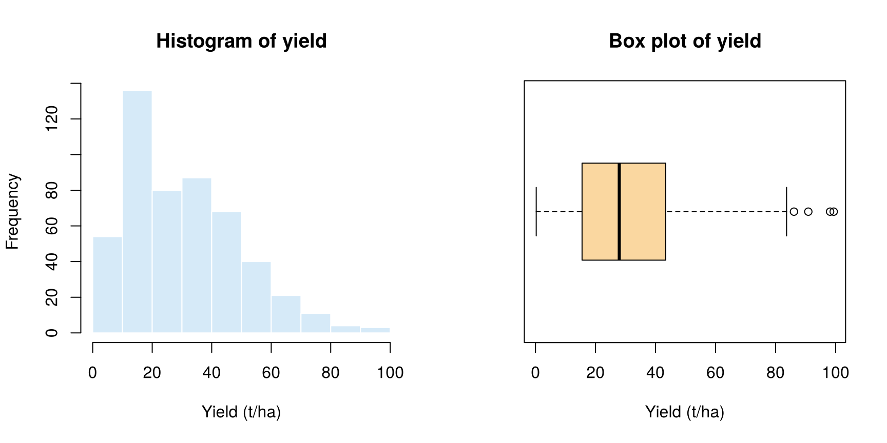
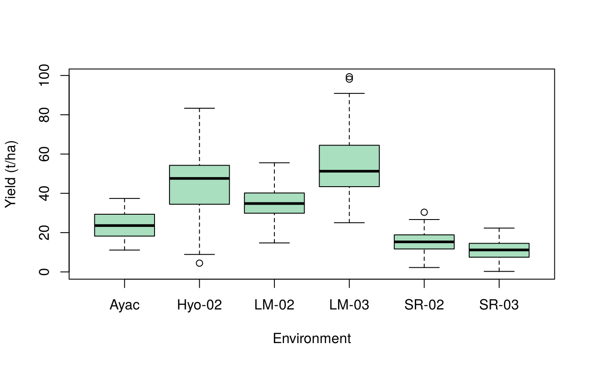
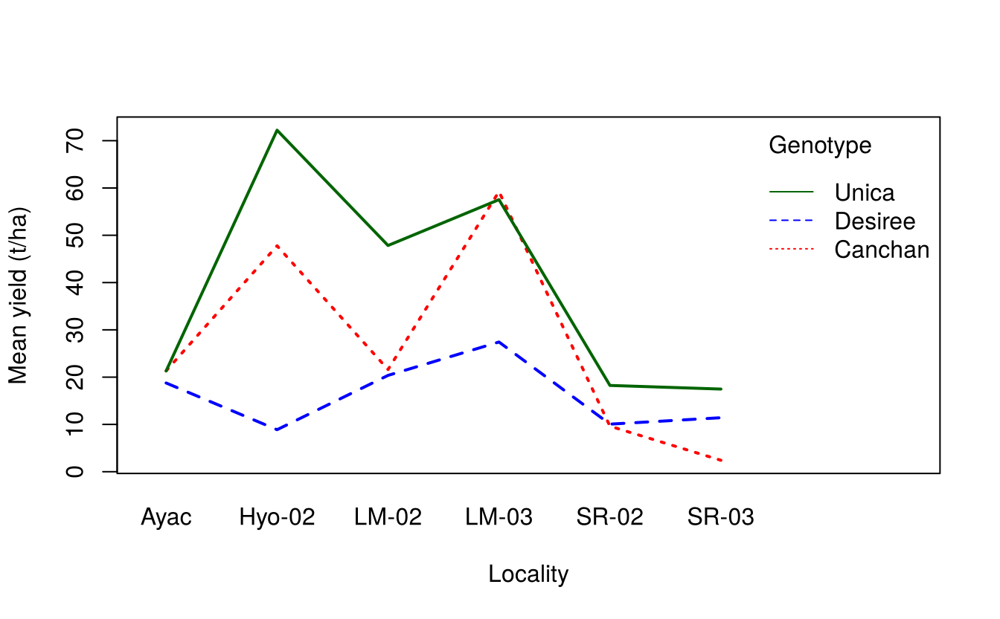
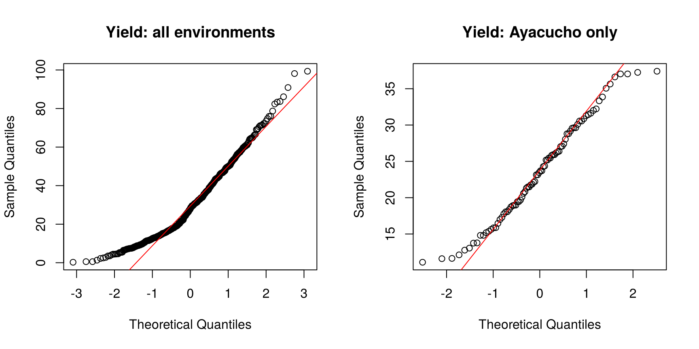
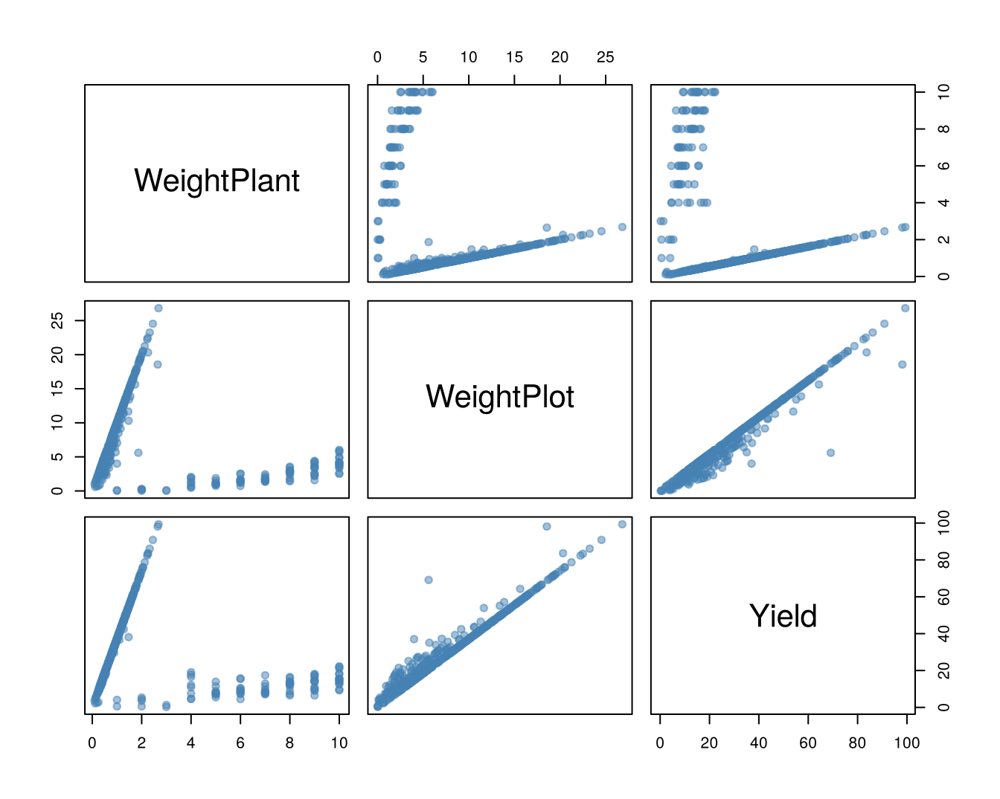
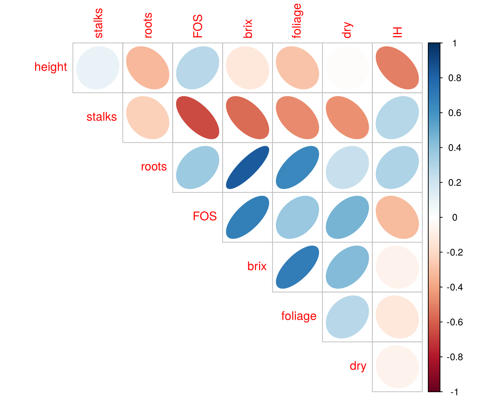

9 Exploratory data analysis
Exploratory data analysis (EDA), a term introduced by John W. Tukey, is the detective work done before any formal test or model. Its purpose is to get to know the data: check that they were entered correctly, see how each variable is distributed, find unusual observations and discover relationships worth testing. EDA combines the summaries of Chapter 7 with the graphs of Chapter 8.
A useful checklist:
- Check the structure: number of rows and columns, variable types, factor levels.
- Look for missing values and data-entry errors.
- Summarise and plot each variable (univariate analysis).
- Summarise and tabulate by groups.
- Look for outliers.
- Check the shape of the distributions (symmetry, normality) and consider transformations.
- Examine relationships between variables (bivariate and multivariate analysis).
9.1 The example data
We use the plrv data from the agricolae package. The International Potato Center (CIP), Peru, evaluated 28 potato genotypes (clones from a population selected for resistance to potato leaf roll virus, plus the check varieties Canchan, Desiree and Unica) in six environments, with three replications each. Tuber yield (t/ha) and weights per plant and per plot (kg) were recorded.
9.2 Structure of the data
dim(plrv)#> [1] 504 6
str(plrv)#> 'data.frame': 504 obs. of 6 variables:
#> $ Genotype : Factor w/ 28 levels "102.18","104.22",..: 1 2 3 4 5 6 7 8 9 10 ...
#> $ Locality : Factor w/ 6 levels "Ayac","Hyo-02",..: 1 1 1 1 1 1 1 1 1 1 ...
#> $ Rep : int 1 1 1 1 1 1 1 1 1 1 ...
#> $ WeightPlant: num 0.51 0.345 0.542 0.989 0.625 ...
#> $ WeightPlot : num 5.1 2.76 4.34 8.9 5 2.56 2.48 10.1 8.25 4.88 ...
#> $ Yield : num 18.9 12.8 20.1 36.6 23.1 ...
head(plrv)#> Genotype Locality Rep WeightPlant WeightPlot Yield
#> 1 102.18 Ayac 1 0.5100 5.10 18.89
#> 2 104.22 Ayac 1 0.3450 2.76 12.78
#> 3 121.31 Ayac 1 0.5425 4.34 20.09
#> 4 141.28 Ayac 1 0.9889 8.90 36.63
#> 5 157.26 Ayac 1 0.6250 5.00 23.15
#> 6 163.9 Ayac 1 0.5120 2.56 18.96Rep is stored as an integer, but it identifies replications, so it should be a factor:
#> [1] 28
levels(plrv$Locality)#> [1] "Ayac" "Hyo-02" "LM-02" "LM-03" "SR-02" "SR-03"9.3 Missing values and data checks
#> [1] 0#> Genotype Locality Rep WeightPlant WeightPlot Yield
#> 0 0 0 0 0 0There are no missing values. Next check that the design is balanced, i.e. every genotype appears once in every replication of every locality:
table(plrv$Locality, plrv$Rep)#>
#> 1 2 3
#> Ayac 28 28 28
#> Hyo-02 28 28 28
#> LM-02 28 28 28
#> LM-03 28 28 28
#> SR-02 28 28 28
#> SR-03 28 28 28#> [1] TRUEEach locality has 28 plots per replication and every genotype has three plots in each locality, so the data are complete and balanced. Also look for impossible values, such as negative yields:
range(plrv$Yield)#> [1] 0.2469 99.35009.4 Univariate analysis
summary(plrv$Yield)#> Min. 1st Qu. Median Mean 3rd Qu. Max.
#> 0.25 15.54 27.91 30.67 43.36 99.35
par(mfrow = c(1, 2))
hist(plrv$Yield, col = "#D6EAF8", border = "white",
main = "Histogram of yield", xlab = "Yield (t/ha)")
boxplot(plrv$Yield, horizontal = TRUE, col = "#FAD7A0",
main = "Box plot of yield", xlab = "Yield (t/ha)")
The distribution is skewed to the right, with a long tail of high yields. A stem-and-leaf plot shows the same shape while keeping the actual values:
#>
#> The decimal point is 1 digit(s) to the right of the |
#>
#> 0 | 011122344444
#> 0 | 5555555667777777778888888899999999999
#> 1 | 00000000111111111111222222222233333333333333333444444444444444
#> 1 | 55555555555555566666666666666677777777777777778888888888888899999999
#> 2 | 00000000001111111112222222222333444444444
#> 2 | 55555566666666677777788889999999
#> 3 | 00000000000001111111111111111222222333333333333444444444444
#> 3 | 55566666666667777777778888889999999
#> 4 | 00000011111111222222333334444444444
#> 4 | 5555566666667777777777788999999
#> 5 | 0000000011111222333344444
#> 5 | 55666667777788899
#> 6 | 00000011122344
#> 6 | 555566799
#> 7 | 01111224
#> 7 | 5669
#> 8 | 234
#> 8 | 6
#> 9 | 1
#> 9 | 899.5 Tabulation and summaries by group
9.5.1 Frequency and contingency tables
table() counts observations in each category; with two factors it gives a contingency (two-way) table. xtabs() does the same with a formula, and prop.table() converts counts to proportions. Here yields are first grouped into classes with cut():
plrv$YieldClass <- cut(plrv$Yield, breaks = c(0, 10, 20, 30, 40, 100),
labels = c("<10", "10-20", "20-30", "30-40", ">40"))
tab <- xtabs(~ Locality + YieldClass, data = plrv)
tab#> YieldClass
#> Locality <10 10-20 20-30 30-40 >40
#> Ayac 0 29 37 18 0
#> Hyo-02 2 2 6 18 56
#> LM-02 0 5 18 39 22
#> LM-03 0 0 4 11 69
#> SR-02 15 56 12 1 0
#> SR-03 37 44 3 0 0
# Row percentages: distribution of yield classes within each locality
round(prop.table(tab, margin = 1) * 100, 1)#> YieldClass
#> Locality <10 10-20 20-30 30-40 >40
#> Ayac 0.0 34.5 44.0 21.4 0.0
#> Hyo-02 2.4 2.4 7.1 21.4 66.7
#> LM-02 0.0 6.0 21.4 46.4 26.2
#> LM-03 0.0 0.0 4.8 13.1 82.1
#> SR-02 17.9 66.7 14.3 1.2 0.0
#> SR-03 44.0 52.4 3.6 0.0 0.0
# Add row and column totals
addmargins(tab)#> YieldClass
#> Locality <10 10-20 20-30 30-40 >40 Sum
#> Ayac 0 29 37 18 0 84
#> Hyo-02 2 2 6 18 56 84
#> LM-02 0 5 18 39 22 84
#> LM-03 0 0 4 11 69 84
#> SR-02 15 56 12 1 0 84
#> SR-03 37 44 3 0 0 84
#> Sum 54 136 80 87 147 5049.5.2 Summary statistics by group
aggregate() computes any function for each group. Here we compute the mean, standard deviation and coefficient of variation of yield in each locality:
cv <- function(x) sd(x) / mean(x) * 100
loc_stats <- aggregate(Yield ~ Locality, data = plrv,
FUN = function(x) c(mean = mean(x), sd = sd(x), cv = cv(x)))
loc_stats <- do.call(data.frame, loc_stats)
names(loc_stats) <- c("Locality", "Mean", "SD", "CV")
loc_stats[order(-loc_stats$Mean), ]#> Locality Mean SD CV
#> 4 LM-03 53.83 16.339 30.35
#> 2 Hyo-02 45.73 14.629 31.99
#> 3 LM-02 34.64 8.370 24.16
#> 1 Ayac 23.70 7.053 29.76
#> 5 SR-02 14.95 5.495 36.75
#> 6 SR-03 11.15 4.989 44.73Mean yields range from about 11.2 t/ha to 53.8 t/ha across environments. A two-way table of means by genotype and locality is obtained with tapply():
#> Ayac Hyo-02 LM-02 LM-03 SR-02 SR-03
#> 102.18 24.9 28.9 32.0 46.8 13.5 11.8
#> 104.22 21.5 53.5 39.2 50.4 16.0 7.1
#> 121.31 23.5 41.3 38.4 63.7 2.5 11.3
#> 141.28 31.8 60.5 34.0 77.6 19.2 15.5
#> 157.26 19.7 41.4 45.2 77.0 24.0 14.6
#> 163.9 17.5 29.5 28.9 32.0 12.7 7.8and the best and worst genotypes over all environments are:
#> 141.28 Unica 319.20 235.6 157.26
#> 39.76 39.10 38.76 38.63 36.95#> 221.19 163.9 Desiree
#> 22.98 21.42 16.169.5.3 Graphs by group
boxplot(Yield ~ Locality, data = plrv, col = "#A9DFBF",
ylab = "Yield (t/ha)", xlab = "Environment")
The box plot shows that most of the variation in yield comes from differences between environments. The right skew seen in the overall histogram is largely the result of mixing environments with very different mean yields.
An interaction plot shows whether genotypes rank similarly in all environments. Here we plot the three check varieties:
checks <- droplevels(subset(plrv, Genotype %in% c("Canchan", "Desiree", "Unica")))
with(checks, interaction.plot(Locality, Genotype, Yield,
col = c("red", "blue", "darkgreen"), lwd = 2, ylab = "Mean yield (t/ha)"))
The lines are not parallel, which suggests genotype × environment interaction: the varieties do not respond in the same way in every environment.
9.6 Outliers
The box-plot rule (Chapter 8) flags as outliers the observations beyond \(Q_1 - 1.5\,\text{IQR}\) and \(Q_3 + 1.5\,\text{IQR}\):
out <- boxplot.stats(plrv$Yield)$out
plrv[plrv$Yield %in% out, c("Genotype", "Locality", "Rep", "Yield")]#> Genotype Locality Rep Yield
#> 368 141.28 LM-03 2 90.89
#> 378 319.20 LM-03 2 99.35
#> 382 351.26 LM-03 2 86.11
#> 416 450.3 LM-03 3 98.15All four come from LM-03, the highest-yielding environment. Outliers should be judged within the relevant group. A common rule standardises each value within its group (\(z\)-score) and flags observations with \(|z| > 3\):
z <- ave(plrv$Yield, plrv$Locality, FUN = function(x) (x - mean(x)) / sd(x))
plrv[abs(z) > 3, c("Genotype", "Locality", "Yield")]#> [1] Genotype Locality Yield
#> <0 rows> (or 0-length row.names)No observation is more than three standard deviations from its environment mean, so the four “outliers” are not unusual once the environment is taken into account.
Never delete an outlier just because it is extreme. First check the field book for a recording or data-entry error. Remove or correct a value only if there is a documented reason, and report what was done.
9.7 Checking normality
Many tests and ANOVA assume normally distributed errors. A normal Q–Q plot plots the ordered data against the quantiles expected from a normal distribution; normal data fall close to a straight line.
par(mfrow = c(1, 2))
qqnorm(plrv$Yield, main = "Yield: all environments"); qqline(plrv$Yield, col = "red")
ayac <- plrv$Yield[plrv$Locality == "Ayac"]
qqnorm(ayac, main = "Yield: Ayacucho only"); qqline(ayac, col = "red")
The Shapiro–Wilk test tests the null hypothesis that the data come from a normal distribution:
shapiro.test(plrv$Yield)#>
#> Shapiro-Wilk normality test
#>
#> data: plrv$Yield
#> W = 0.95, p-value = 2e-12
shapiro.test(ayac)#>
#> Shapiro-Wilk normality test
#>
#> data: ayac
#> W = 0.97, p-value = 0.09Pooled over all environments, yield is clearly not normal (\(p < 0.001\)). Within Ayacucho the test gives \(p =\) 0.087. In a designed experiment, normality is assessed on the residuals of the fitted model, not on the raw data (Chapter 13).
9.7.1 Transformations
When data are skewed or the variance increases with the mean, a transformation can help:
| Type of data | Transformation | R code |
|---|---|---|
| Counts (insects, lesions, weeds) | square root |
sqrt(x) or sqrt(x + 0.5)
|
| Percentages or proportions (germination, disease incidence) | angular (arcsine) |
asin(sqrt(p)) with p = proportion |
| Positive data with variance ∝ mean² (yield, biomass, income) | logarithmic |
log(x) or log(x + 1)
|
See Chapter 7 of Gomez and Gomez (1984) for guidance. The Box–Cox procedure (MASS::boxcox()) can suggest a suitable power transformation.
9.8 Relationships between variables
A scatter-plot matrix and a correlation matrix give a first view of the relationships among several numeric variables:
pairs(plrv[, c("WeightPlant", "WeightPlot", "Yield")],
col = adjustcolor("steelblue", 0.5), pch = 19)
#> WeightPlant WeightPlot Yield
#> WeightPlant 1.000 -0.238 -0.234
#> WeightPlot -0.238 1.000 0.981
#> Yield -0.234 0.981 1.000Plot weight and yield are almost perfectly correlated (r = 0.981), as expected, because yield per hectare is calculated from plot weight. The corrplot package draws a correlation matrix as a picture, which is useful when there are many variables:
library(corrplot)
data(yacon)
corrplot(cor(yacon[, c("height", "stalks", "roots", "FOS", "brix", "foliage", "dry", "IH")]),
method = "ellipse", type = "upper", diag = FALSE)
Chapter 18 covers correlation in detail.
Exercises
- Carry out an exploratory data analysis of the
yacondata inagricolae: check its structure, summarise dry root matter (roots) by locality and fertiliser dose, and draw suitable graphs. - Make a two-way table of mean
brixbyentryandlocality. Which entry has the highest mean? - Draw a normal Q–Q plot of
rootsfor each locality. Is the distribution approximately normal within localities? - The
InsectSpraysdata give counts of insects after six insecticide treatments. Draw box plots ofcountand ofsqrt(count)byspray. What does the square-root transformation do to the spread within groups?